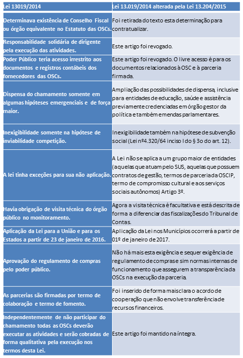

Novo Marco Regulatório das OSCs, que entrou em vigor em janeiro de 2016, normatiza os repasses de recursos públicos às organizações da sociedade civil. Na visão de advogados, consultores da área e gestores, saiba quais são as suas implicações práticas e quais pontos merecem especial atenção
Diferentemente da maneira como vinha sendo feito antes, agora OSCs (organizações da sociedade civil) têm uma lei própria de regulamentação e formalização de transferências voluntárias de recursos da União nas esferas federal, estadual e municipal. Isto é: o repasse feito por meio do Sistema de Convênios (SINCOV) deixa de se aplicar também a OSCs, facilitando – em partes – a desburocratização dos processos, dando legitimidade aos serviços prestados por OSCs e, em teoria, democratizando o acesso a esses recursos.
Se até o momento as OSCs precisavam se enquadrar como “regra de exceção”, como explicou a advogada e membro do Conselho da Captamos Ana Carolina Carrenho, a nova medida traz um avanço nas relações e no reconhecimento por parte do Governo à importância da atuação das OSCs em suas diversas áreas. Segundo ela, o Novo Marco Regulatório “tirou as organizações de um cenário de exceção e agora é possível entender de uma maneira uniforme quais são as obrigações, deveres, os orçamentos, regras de prestações de contas, metas claras e indicadores a serem apresentados” na hora de escrever uma proposta.
Rosana Pereira, consultora do SINCOV para organizações, municípios e estados e associada da ABCR (Associação Brasileira de Captadores de Recursos), comemora: “As OSCs passaram 20 anos sem quase nenhuma legislação. Nos últimos 8 anos, criaram a SICONV, que servia para todo mundo, mas que, por conta da burocracia era muito difícil para as OSCs. Agora sim, efetivamente, temos uma lei exclusiva. É o Governo Federal ouvindo a comunidade, a população das OSC e fazendo uma lei específica”.
Coordenadora geral da Ação Educativa, Vera Masagão concorda: “Normalmente se usava o sistema de convênio para repasse entre governos como instrumento para repasse para OSCs também. Isto criava uma série de problemas por ser remendo dentro de uma lei que deveria servir apenas para órgãos públicos. O Novo Marco [Regulatório] é um ganho muito importante porque reconhece a legitimidade e particularidade do repasse do órgão público para uma entidade da sociedade civil”.
Basicamente, a nova legislação nacional cria regras em torno do esforço de transparência desses repasses de recursos – tanto no âmbito da União, que deve deixar claro e acessível os números de investimento – quanto das OSCs que, segundo Masagão, tem o dever de prestar contas à sociedade sobre o destino final desse repasse, assim como os impactos diretos no público beneficiado com o serviço.
A reflexão sobre as mudanças de fato na implementação da nova lei passa também por uma provocação além: “O planejamento [das organizações] precisa estar vinculado a uma cultura de diversificação de fontes de recursos e não apenas depender de recursos da União; até porque as ações precisam ser fomentadas na sociedade civil primeiro para depois virar política pública, não o contrário”, comenta Carrenho.
Como alguém que atua já na ponta do processo, Masagão afirma que além da possibilidade de chamamento público democratizar o acesso aos recursos, a lei traz ferramentas inovadoras, mas que podem ficar em desuso por falta de vontade política dos líderes do Governo em acreditar e investir no valor da participação social. Ela se refere aos Termo de Colaboração e Termo de Fomento, novidades para esse cenário.
Masagão explica: “Termo de colaboração é quando já existe um processo de trabalho; uma política pública totalmente estabelecida e a OSC entra como serviço suplementar à atuação do Estado. Termo de fomento busca incentivar a criação de novas ações, mesmo que não tenham um plano de trabalho definido ainda e, por isso, acaba estimulando atividades autônomas inclusive.” Por fim, há também à disposição o Termo de Manifestação de Interesse, que convida organizações a proporem um tema relevante em voga para o que o Governo abra um edital sobre.
Confira a seguir a um quadro levantado por Carrenho com as principais alterações e pontos de atenção:
